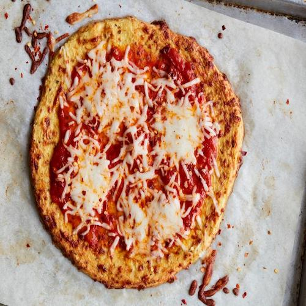

Cauliflower Pizza Recipe
<--- Go Back To Recipes

Description
Cauliflower Pizza Crust comes out crispy, you can hold the slice and use
frozen cauliflower or cauliflower rice to make it. Tasty, low carb and the
best recipe on the web
You are looking at the best cauliflower pizza crust on the web! It is
crispy, cheesy and you can really hold the slice. Healthy dinner is
served. I will not lie, the crust doesn’t taste like traditional pizza
crust. Or that recipe is not time consuming. But crust is super tasty and
I highly recommend to make 2 crusts!
Ingredients
- 1 head cauliflower
- 1/2 cup shredded mozzarella
- 1/4 cup grated Parmesan
- 1/2 teaspoon dried oregano
- 1/2 teaspoon kosher salt
- 1/4 teaspoon garlic powder
- 2 eggs, lightly beaten
Instructions
-
Preheat the oven to 400 degrees F. Line a baking sheet with parchment
paper.
-
Break the cauliflower into florets and pulse in a food processor until
fine. Steam in a steamer basket and drain well. (I like to put it on a
towel to get all the moisture out.) Let cool.
-
In a bowl, combine the cauliflower with the mozzarella, Parmesan,
oregano, salt, garlic powder and eggs. Transfer to the center of the
baking sheet and spread into a circle, resembling a pizza crust. Bake
for 20 minutes.
- Add desired toppings and bake an additional 10 minutes.
<--- Go Back To Recipes